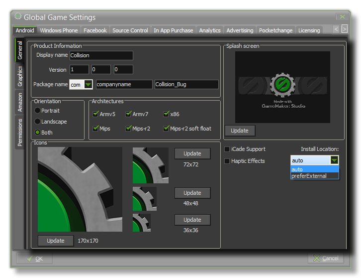
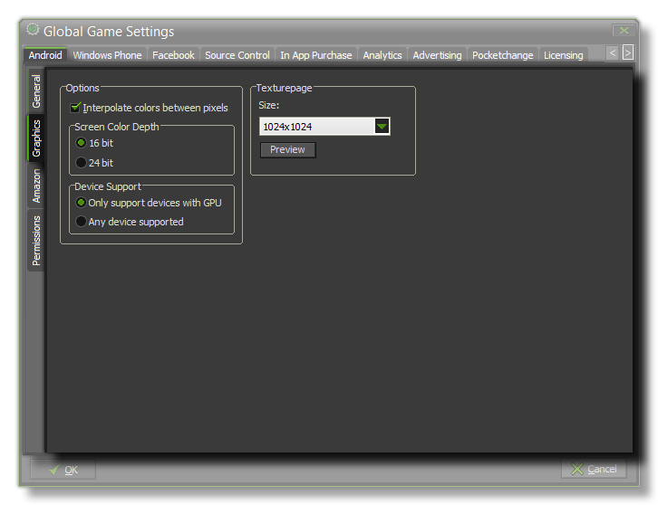
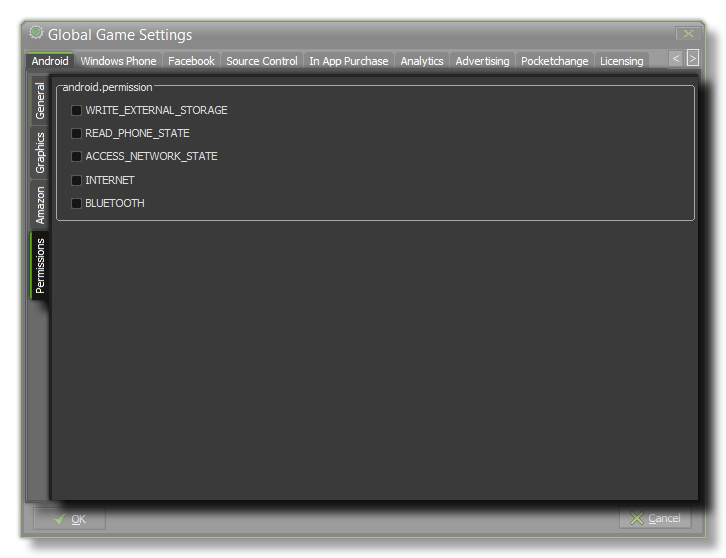

The Android Tab
This section deals with the Android tab of the Global Games Settings Window.
This Android tab is split into two separate sub-tabs (accessible on the left of the window) to make changing and updating the information for your game clearer and less complicated. These tabs are
explained in the following sections.
General

The first thing to do is fill in the details about your game, including its Display Name, its Package Name and the Version info. The package name can only be made up of letters
from A-Z and numbers 0-9, with no symbols or other characters at all and should follow the format “com.domain.myapp”.
Once that is done you will need to give your game Icons and a Splash Screen. The icons should be authored as a individual *.png files with sizes of 36x36px, 48x48px, 72x72px
and 170x170px. The splash screen should be the size of the first room in your game as this is what will briefly be shown while the game assets are being loaded. Smaller or larger images are
permitted but will be scaled to fit.
Once you have configured the game details and presentation graphics, there are two more available options :
- Architectures - This is the CPU type that your game will support. The most common ones are chosen by default (99% of all devices use these), but you can choose those
that you think appropriate. Bare in mind that each one will add about 1MB to the final apk size, don't go ticking them all unless this is not a problem!
- Orientation - Here you can choose to lock the game to a specific orientation by checking either landscape, portrait, or both.
You can also see that there is an option marked iCade Support. You can select this to enable the Android version of the iCade to work with your game, or to enable bluetooth gamepads. See the functions for
GamePad Input.
Beneath the iCade Support check-box, you can find the haptic Effects check-box. Enabling this will permit the use of haptic effects (vibration) in your game, but it is dependant of you accepting
the Immersion EULA that pops up. If you decline to accept the agreement, then haptic effects will not be enabled, and if you have code for them in your game, the game will fail to compile. For more
information on the GameMaker:Studio haptic effects, see the section Immersion Haptics.
The final option on this tab deals with the Install Location for your game. This can either be set to auto, in which case the game will be installed to the location chosen by the user on their
device, or it can be set to Prefer External which will always try to install the game to the external storage of the device.
Graphics

The graphics tab has two sections to it, the Options and the Texture Pages. The first of these controls the display options for your game, with the first one being the Interpolate Colors
Between Pixels flag. This turns on interpolation, which basically "smooths" pixels, so for crisp pixel graphics, it should be off, but if you have nice alpha blends and smoothed edge graphics it is better left on.
Next, you can set the Screen color Depth to either 16bit or 24bit. This will affect the compatability with some older devices if it is set to 24bit, and will also increase the ashmem
that is needed (this is the shared memory on Android devices).
The last option here is the Device Support for your game. You can choose to support any device, or only those that have a GPU. Basically, if your game has any advanced drawing functions like
alpha blending, additive blending, surfaces, etc... you should limit it to those devices that have a GPU otherwise you run the risk of getting negative comments and poor rating for your game due to graphical
errors or crashes on older devices.
Finally there is the option to set the size of the Texture Page. The default (and most compatible) size is 1024x1024, but you can choose from anywhere between 256x256 up to 2048x2048.
There is also a button marked View which will generate the texture pages for this platform and then open a window so that you can see how they look. This can be
very useful if you wish to see how the texture pages are structured and to prevent having texture pages larger (or smaller) than necessary.
NOTE : Be aware that the larger the size of the texture page, the less compatible your game will be.
Social
 This tab permits you to enable social functions for your Android game with either Amazon GameCircle or Google Play. Both markets permits you to add achievements and leaderboards
for your games in a simple way, allowing worldwide highscores as well as local ones. Once you have ticked the appropriate checkboxes, you will need to code the functionality into your game using the
Achievements and Leaderboards functions.
This tab permits you to enable social functions for your Android game with either Amazon GameCircle or Google Play. Both markets permits you to add achievements and leaderboards
for your games in a simple way, allowing worldwide highscores as well as local ones. Once you have ticked the appropriate checkboxes, you will need to code the functionality into your game using the
Achievements and Leaderboards functions.
If you are using GameCircle, you can also enable WhisperSync which is an Amazon based cloud storage service (see the section on
Cloud Services for more information).
If you use Google Play you will need to add your App Id into this tab for the functions to work (this can be found from your Google Play Developers dashboard).
Permissions

From this tab you can change some of the permissions that your game may request within the Android Manifest. GameMaker:Studio allocate permissions automatically as required, however
you may find you require a permission for your game that we haven't assigned in which case tick the requisite permission box on the tab. The list below outlines those that are available:
- WRITE_EXTERNAL_STORAGE - Will permit your game to write to external storage.
- READ_PHONE_STATE - Allow read only access to the phone state.
- ACCESS_NETWORK_STATE - Permit your game to access information about networks.
- INTERNET - Permit your game to open network sockets.
- BLUETOOTH - Will permit your game to connect to paired bluetooth devices.
NOTE: If you are not sure that you need these, you should probably just leave them un-checked by default and let GameMaker:Studio deal with the permissions for your game.
© Copyright YoYo Games Ltd. 2013 All Rights Reserved